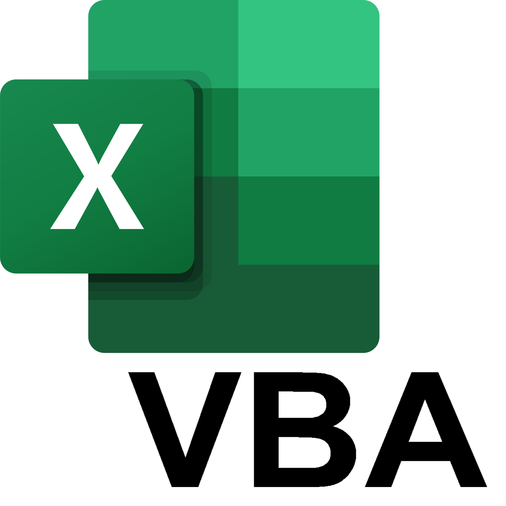
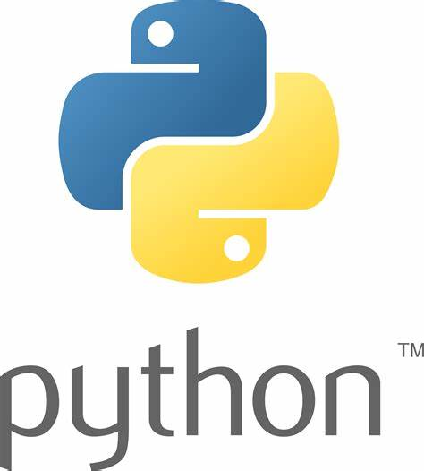
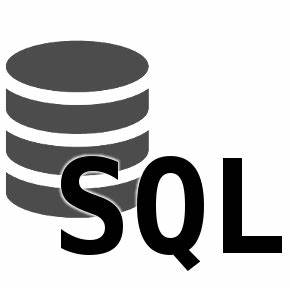
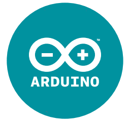
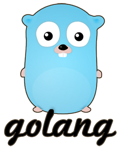

Recherche d'un apprentissage
en Ingénierie Numérique
en Ingénierie Numérique
Data Scientist - Data Engineer - Software engineer
Charles Mailley
Compétences
Data visualisation

Data analysis


Systèmes embarqués

Développement logiciel

Langues
Anglais B1
TOIC: 770/990
Allemand B2
Savoir-être
Curieux
Ordonné
Esprit d'équipe
Centres d'intérêt
Programmation de jeux vidéo (Python)
- Jeux de stratégie en 2D
- Gestion d'images et de sons
Animateur de camp de vacances
Scouts et guides de France
- Gestion de la comptabilité et des finances
- Préparation et animation d'activités
- Encadrement d'une 30ène de jeunes
- Gestion de l'intendance
Tir à l'arc
- Pratique en compétition depuis 9 ans
- Formation assistant-moniteur de tir
Expérience professionnelle
Alternance Data Analyst
STELLANTIS - Poissy
Analyses et création de reportings sur des coûts techniques.
Ceci ayant pour but l'amélioration de modèles de prévisions ainsi que de permettre la mise en place d'actions opérationnelles dans le but de réduire les dépenses.
- Extraction SQL depuis un Data Lake
- Analyses exploratoires en Python
- Création de tableaux de bord des dépenses sur Power Bi
05/10/2022
-
30/09/2025
-
30/09/2025
Stage de fin de DUT - Versailles
SIMMT direction centrale, ministère des armées
Automatisation de l'étude de l'impact de la maintenance profonde des parcs d'engins majeurs de l'Armée de Terre.
- Programmation d'outils d'analyse de données
- Réalisation d'une étude basée sur l'analyse de données
- Outils utilisés : Pandas (Python), R
04/04/2022
-
24/06/2022
-
24/06/2022
Formations et diplômes
Ingénieur logiciel - ISEP
Paris / Issy-les-Moulineaux
Spécialiste des langages et des algorithmes, expert en conception et en développement logiciel, capable de gérer de bout en bout un projet, s'adapte à tous les environnements.
Compétences spécialisées :
- Sécurité Logicielle
- Machine Learning
- Architectures et Programmation Distribuées
- 3D and Immersive Reality
2022 - 2025
DUT Statistique et Informatique Décisionnelle
(DUT STID) - Université de Caen-Normandie
- Informatique (traitement des données)
- Statistiques (méthodes d'analyses des données)
- Mathématiques
Compétences spécialisées :
- Concevoir une base de données et contrôler sa fiabilité
- Décrire les données statistiquement
- Analyser, modéliser et effectuer des prévisions
2020 - 2022
BAFA Directeur de camp
- Apte à prendre la responsabilité d'un camp de 30 jeunes
- Apte à diriger une équipe d'animateurs
2021
Baccalauréat scientifique
Lycée Blaise Pascal - Rouen
Sciences de l'ingénieur - option maths
2021